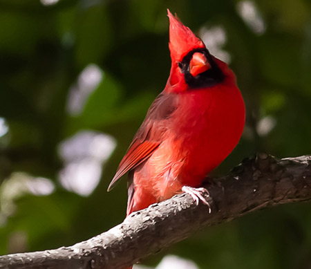

Northern Cardinal
The male Northern Cardinal may be responsible for getting more people to open up a field guide than any other bird. They're a perfect combination of familiarity, conspicuousness, and style: a shade of red you can't take your eyes off. Even the brown females sport a sharp crest and warm red accents. Cardinals don't migrate and they don't molt into a dull plumage, so they're still breathtaking in winter's snowy backyards. In summer, their sweet whistles are one of the first sounds of the morning. Read more...